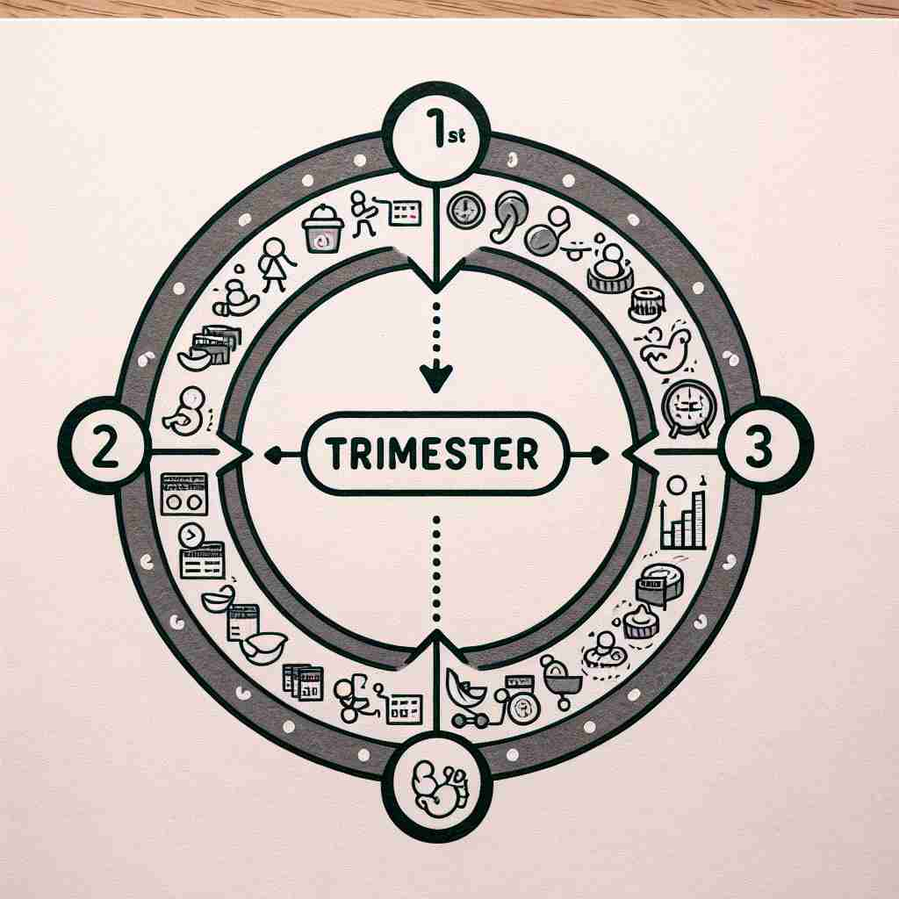

💬 The students are excited to start their academic trimester with new activities. 学生们对即将开始的新学期活动感到兴奋。
💬 The students are excited to start their new academic trimester. 学生们对开始新的学期感到兴奋。

💬 The first trimester is important for early pregnancy development. 怀孕的第一孕期对于早期妊娠发展至关重要。

💬 The doctor explained what happens during the first trimester of pregnancy. 医生解释了怀孕前三个月期间会发生什么。
🧠 单词'trimester'源自拉丁语'trimestris'，由'tri-'（三）和'mensis'（月）组成，字面意思是'三个月的期间'。这个核心含义在不同情境下被应用，特别是在怀孕期和学术年度的划分上。记忆时，可以将'tri-'与'三'联系起来，'-mester'与'月'（month）联系起来，形成'三个月'的概念。
🔈 [traɪ'mestə]
🗝️ n. a period of three months 三个月的时间
🎭 在一个气候研究中心，一组科学家正在分析季度变化的数据。研究负责人在白板上标出了四个季度，解释说："我们将全年分为四个 trimester，以便更好地分析每个三个月期间的气候模式。"这个场景展示了'trimester'作为三个月期间的含义。
💬 The academic year is divided into three trimesters. 学年分为三个学期。
🌳 由前缀 "tri-"（三）和词根 "mester"（来自拉丁语，意为 "月" ）组成，表示三个月的时期，常用于描述怀孕期间的三个月阶段。
🕸️ 1.triangle: 三角形 2.tricycle: 三轮车 3.trilogy: 三部曲
💡 记忆 "trimester" 可以联想到 "triple" 的感觉，即三个部分，把一年的学期或怀孕期分成三个阶段。将三个时间段联系在一起，便于记忆这段时间的长度。